Twenty-one practical books on the tools, the skills, and the systems behind useful AI — plus governance toolkits for the teams deploying it.
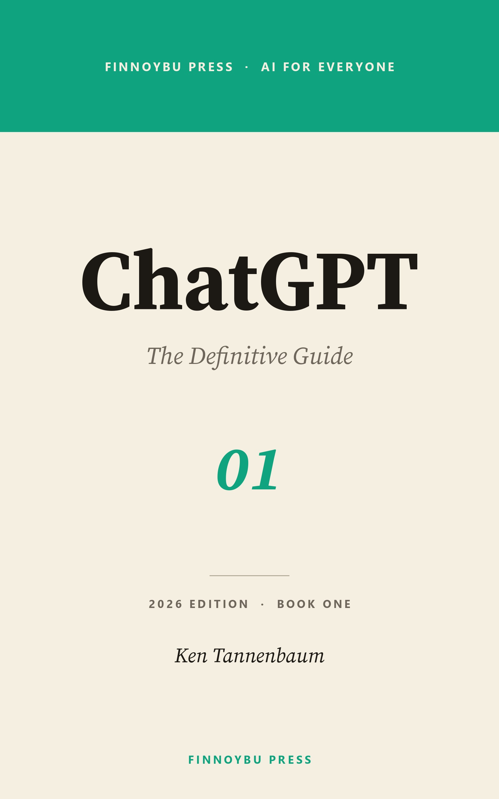
Most writing about AI is either selling you the future or warning you about it. We wanted something else: clear, practical books for the people who actually have to use these tools at work.
— Ken Tannenbaum, founder
The catalog is structured into four collections, each solving a different shape of problem — from learning a single tool to standing up governance across a team.
Comprehensive paired guides for the major AI assistants. Start with the definitive guide, then go deeper with the advanced companion.
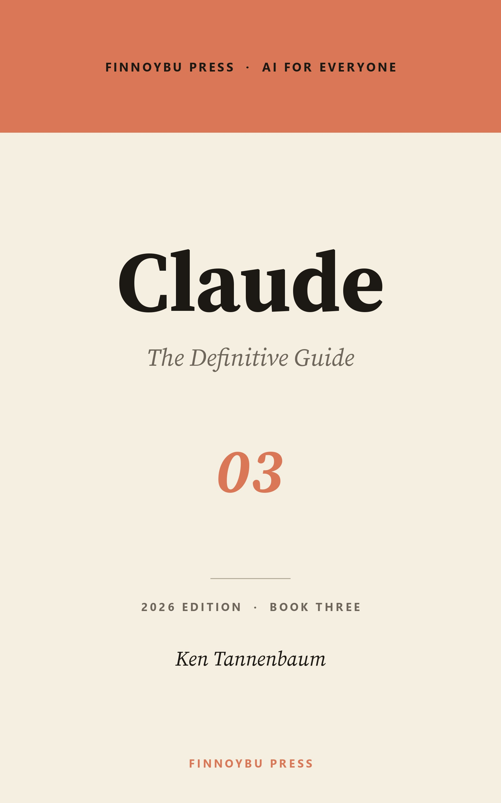
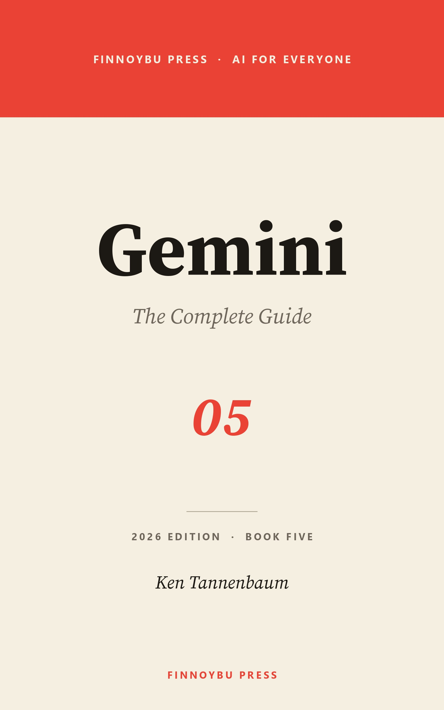
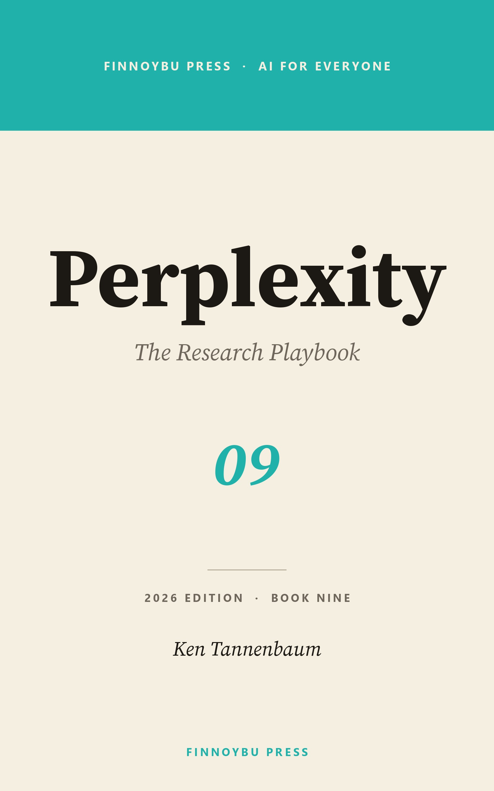
Focused single-volume guides for the next wave of AI tools — research, reasoning, code, and agentic work.
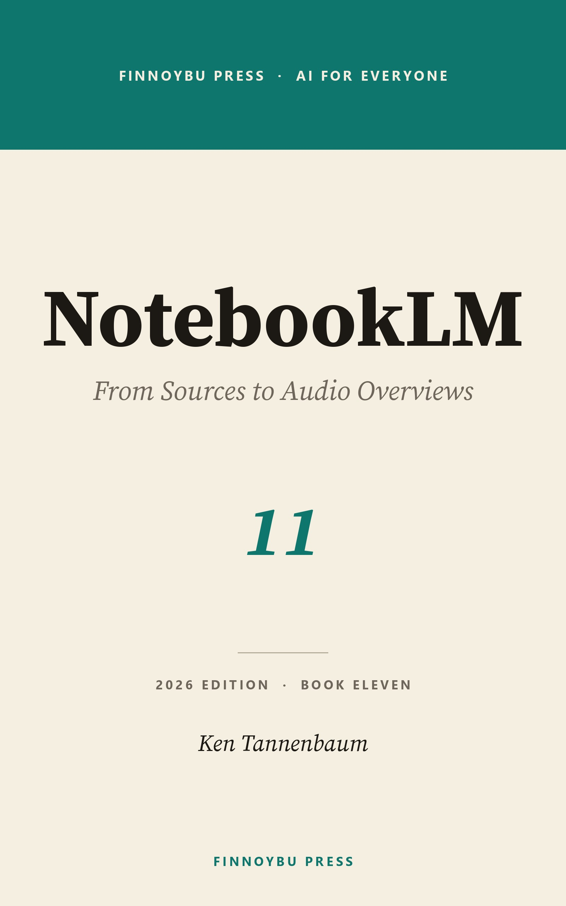
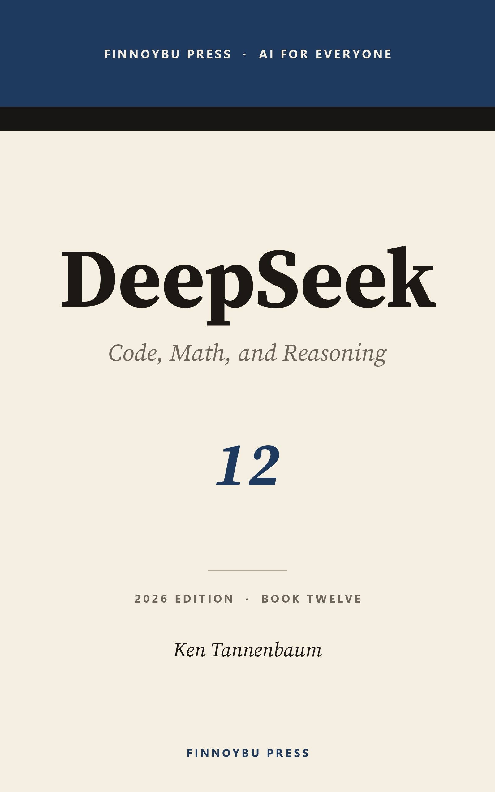
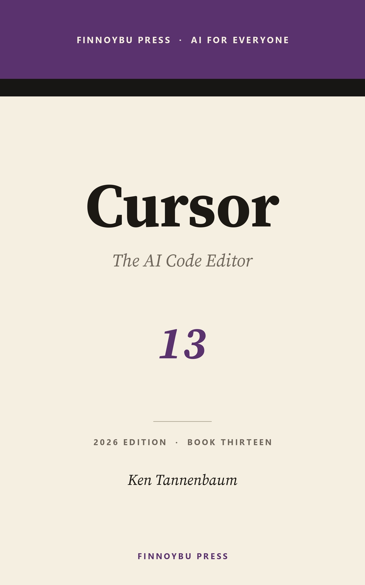
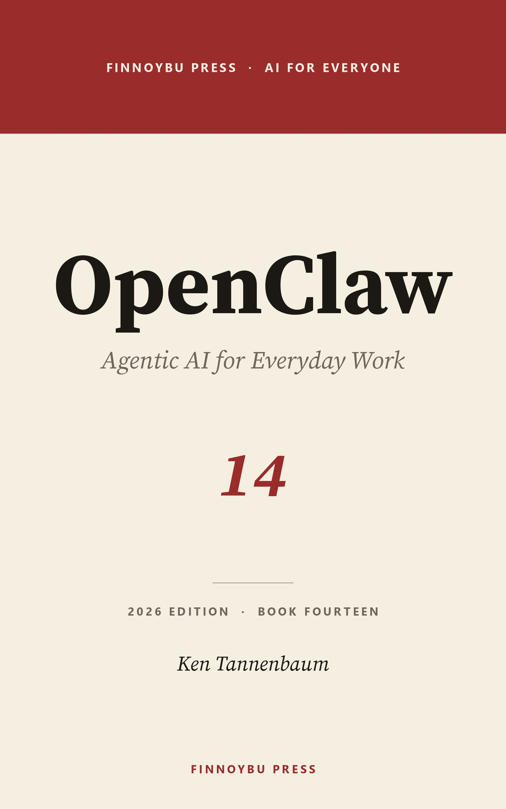
The skills that hold the rest together: prompting, AI for business, AI for developers, governance, and security.
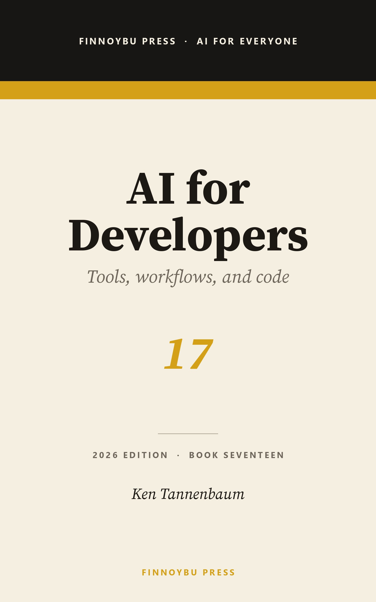
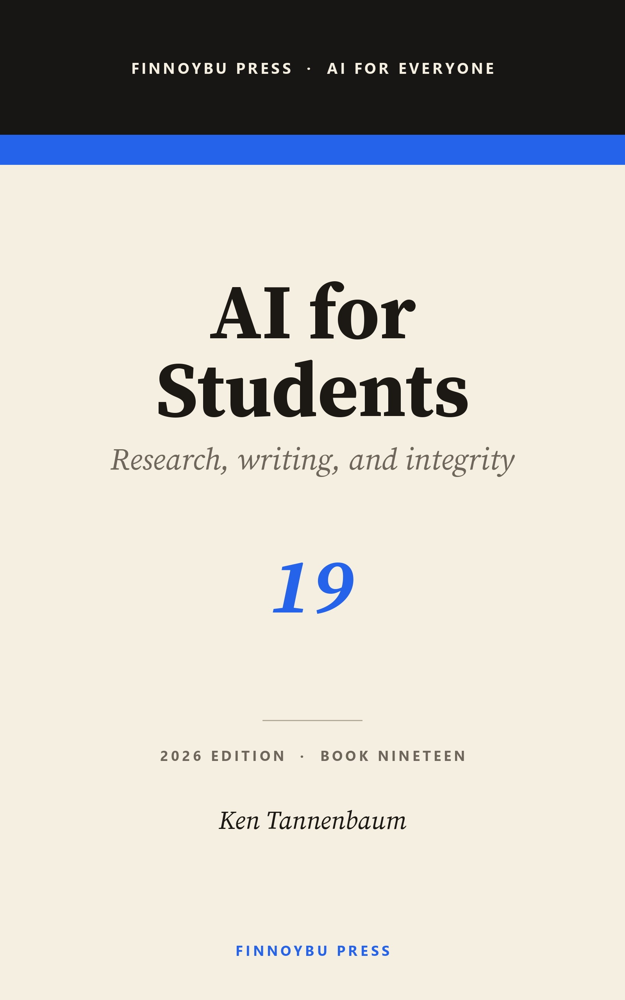
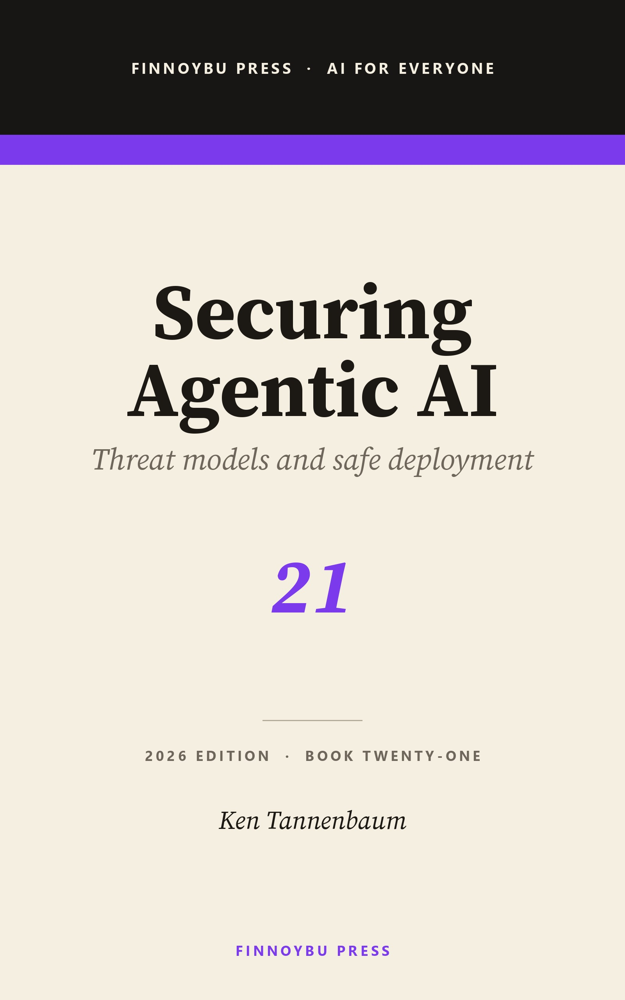
Fill-in-the-blank AI governance kits for small and midsize businesses. Three tiers — Starter, Standard, Pro — sized for real teams, not Fortune 500s.
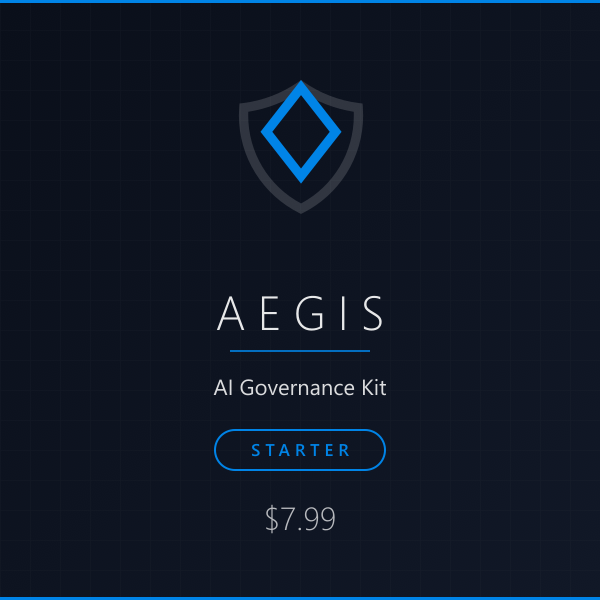
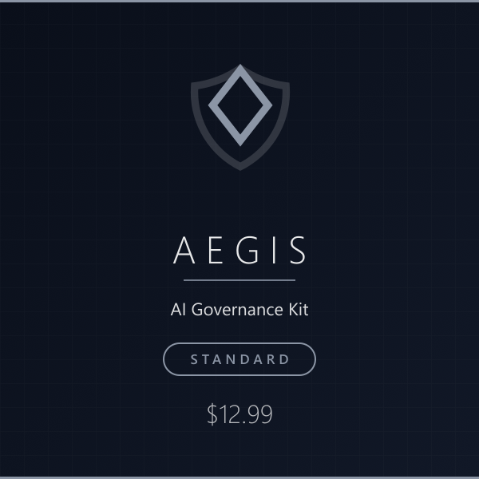
The AI for Everyone series began with a simple observation: most teams using AI today have no shared baseline for what these tools are, what they can do, or where they end. The books that exist are either hype, panic, or dense academic work — none of them what you'd hand to a coworker on Monday morning.
Each book in the series is written to be useful on day one and to serve as a reference you come back to. Whether you're opening ChatGPT for the first time or building enterprise workflows with Copilot, the goal is the same: clear writing that helps you get real work done.
The thread running through all twenty-one titles is that AI tooling is genuinely useful, genuinely limited, and genuinely worth learning — and that none of those statements requires turning the volume up to eleven.